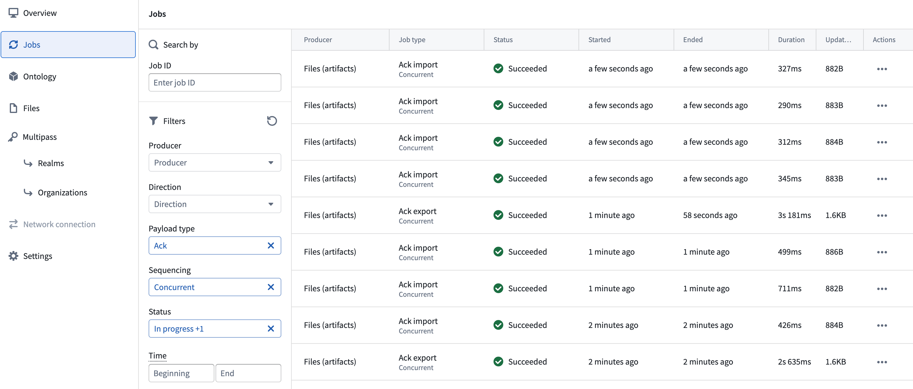

Peer Manager sends data between spaces using peering jobs. This page explains how to read the peering jobs table on a connection's Overview page, the difference between concurrent and sequential jobs, what each job status means, and how to filter the table to focus on the jobs you care about.
Each peering job corresponds to a specific type of data sent in a single direction. Peer Manager enumerates all jobs for a connection in the connection's Overview page, where each row shows the job's type, status, producer, and the time it ran.
Peer Manager uses two properties to describe a job's type:
Export jobs also display a sequencing value beneath the job type that indicates whether the job is concurrent or sequential, as described below. Import jobs display the sequencing of their corresponding export, but in practice all import jobs run concurrently.
Export jobs run in one of two sequencing modes: concurrent or sequential. Understanding the difference helps you interpret the health of a connection.
Concurrent jobs are real-time, on-demand exports. They fire whenever data is created or updated, and they run in parallel: a producer can run any number of concurrent jobs at the same time. Concurrent jobs are the fast path that keeps a connection up to date during steady-state peering.
Concurrent jobs carry both Data payloads, which are real-time object, link, and file changes, and Acknowledgement, or Ack, payloads, which are the acknowledgments a system sends back immediately after importing data, confirming receipt so the sender stops resending. A concurrent Ack job is the fast path for confirming a transfer, just as a concurrent Data job is the fast path for sending one. You can identify these immediate acknowledgments in the Jobs table by their Ack payload type combined with Concurrent sequencing.

Sequential jobs are periodic, catch-up batch jobs that run one at a time for a given relationship: a producer runs only one sequential job at a time per relationship. They exist to backfill anything the real-time path missed, such as a concurrent export that failed or a backlog that built up while the connection was unavailable. Because sequential jobs for a relationship run one after another, a large sequential job blocks the next sequential job for that relationship until it completes.
Each job displays a status that reflects where it is in its lifecycle. The following table describes the statuses displayed in the jobs table.
| Status | What it means |
|---|---|
| Collecting data | The producer is gathering all data that the remote system has not yet acknowledged and packaging it for transfer. See Time spent collecting data below. |
| Exporting | The export is being generated on your enrollment and prepared for transfer. |
| Saving | The export payload is being written to storage before it is transferred. |
| Ready to download | The export has been generated and is ready to be manually downloaded. This status applies to data relay connections, where an export is downloaded and transferred over a cross-domain solution rather than pulled directly by the remote system. |
| Awaiting pull | The export is saved and waiting for the remote system to pull it. The transfer begins once the remote system finishes any in-progress transfers and initiates a pull. |
| Empty | The job ran but transferred no data and no acknowledgments. See Empty jobs below. |
| Failed | The job did not complete. Peer Manager displays a detailed error message for the stage at which the job failed, along with a Copy error instance ID option that you can share with Palantir Support to assist in troubleshooting. |
Import jobs progress through equivalent receiving stages as data arrives from the remote system and is handed off to your enrollment.
Sequential jobs may remain in the Collecting data status longer than other downstream statuses. This may occur because the peer producer carries the backlog of all data the remote system has not yet acknowledged. When a sequential job runs, it gathers everything that accumulated since the last successful transfer, such as the initial data sent during the first synchronization, or everything that built up while real-time peering was failing or the connection was unavailable.
A common cause of a long collecting phase is a data backlog. For example, when you enable peering for new object types across a connection, Peer Manager sends their history through sequential jobs, which require a longer duration to complete.
:::callout{theme="neutral" title="Note"} Occasional large Collecting data phases are expected during initial synchronization or after downtime. However, if sequential jobs consistently remain in that phase to collect large amounts of data, this indicates that real-time peering is falling behind or more data is being generated than the current configuration can keep up with. Review the connection for repeated export failures. :::
Empty jobs transfer zero data and no acknowledgments, and they occur when a scheduled sequential job runs and finds nothing to transfer.
Empty jobs are harmless and expected. Their presence is a healthy sign, because it means concurrent, real-time peering is keeping up and is not encountering failures that require retries. You do not need to take any action on empty jobs, and Peer Manager hides them by default from the Jobs table.
Use the available Filters to limit the jobs displayed in the Jobs table:
Select Reset all filters to clear every filter and return to the full list of jobs.
Peer Manager computes the health shown for a connection from its most recent non-empty jobs, so empty jobs do not affect the health indicator.
Follow the heuristics below to assess your connection's health: